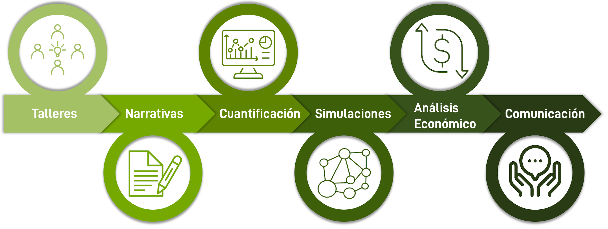

El siguiente gráfico muestra los pasos del flujo de trabajo del proyecto NASCENT-Peru para crear y simular escenarios normativos, positivos para la naturaleza, para el futuro desarrollo del paisaje en Perú. Haga clic en cada paso para obtener más información.

1. Talleres:
El proceso participativo del proyecto incluye una serie de talleres, tanto nacionales como regionales, que reúnen a partes interesadas y expertos. El objetivo es identificar en colaboración los aspectos deseables e indeseables del futuro cambio paisajístico.
Lugares de los talleres
Narrativas:
Además de los talleres, se realiza una encuesta en línea. A partir de la información obtenida en los talleres y la encuesta, se crean escenarios exploratorios y normativos. Los escenarios exploratorios consisten en escenarios negativos y en que todo sigue igual, mientras que los escenarios normativos consisten en escenarios positivos para la naturaleza.
Cuantificación:
Las tasas de cambio del uso y la ocupación del suelo (LULCC) se determinan para cada escenario cuantificando las tendencias de los factores socioeconómicos, biofísicos y climáticos.
Simulaciones:
Durante la fase de simulación, se determinan los Servicios Ecosistémicos (ES) y la distribución de especies para cada escenario, teniendo en cuenta el futuro Uso y ocupación del Suelo (LULC) como uno de los factores de entrada.
Análisis Económico:
Las características económicas de cada escenario se cuantifican en función del uso y la ocupación del suelo (LULC) y de los servicios ecosistémicos (ES).
Comunicación:
Como parte de la metodología del proyecto, se presentarán resultados provisionales para refinar los escenarios. Los resultados finales y los conjuntos de datos se pondrán a disposición del público, contribuyendo así a la base de conocimientos para futuros proyectos.
El procedimiento utilizado en NASCENT-Perú se basa en la metodología utilizada en ValPar.CH